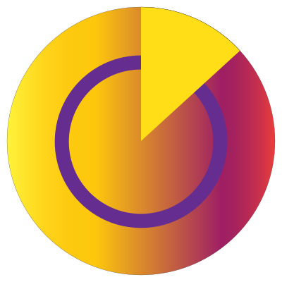

<ion-header>
  <ion-toolbar>
    
    <ion-title slot="start">Record A Task</ion-title>
  </ion-toolbar>
</ion-header>

<ion-content padding>
  <form id="trackerForm" [formGroup]="taskForm">
    <ion-list>
      
      <ion-list-header>
          Start a new Task
      </ion-list-header>

      <ion-infinite-scroll threshold="100px" (ionInfinite)="loadData($event)">
        <ion-infinite-scroll-content loadingSpinner="bubbles" loadingText="Loading more data...">
          <ion-item>
              <ion-label position="stacked">Task Name</ion-label>
              <ion-input type="text" name="taskName" placeholder="Type task name (minimum 3 chars)" formControlName="name"></ion-input>
          </ion-item>

          <ion-item>
            <ion-label position="stacked">Description</ion-label>
            <ion-input type="text" name="taskDescription" placeholder="Please input description (minimum of 5 chars)" formControlName="description"></ion-input>
        </ion-item>

          <ion-button expand="full" color="tertiary" *ngIf="!started" (click)="start()" [disabled]="!taskForm.valid">Start</ion-button>
          <ion-button expand="full" color="secondary" *ngIf="started" (click)="stop()">Stop</ion-button>

        </ion-infinite-scroll-content>
      </ion-infinite-scroll>

      <ion-item *ngIf="started">
        {{time}} seconds
      </ion-item>

    </ion-list>
  </form>

  <ion-list>

  </ion-list>
</ion-content>
